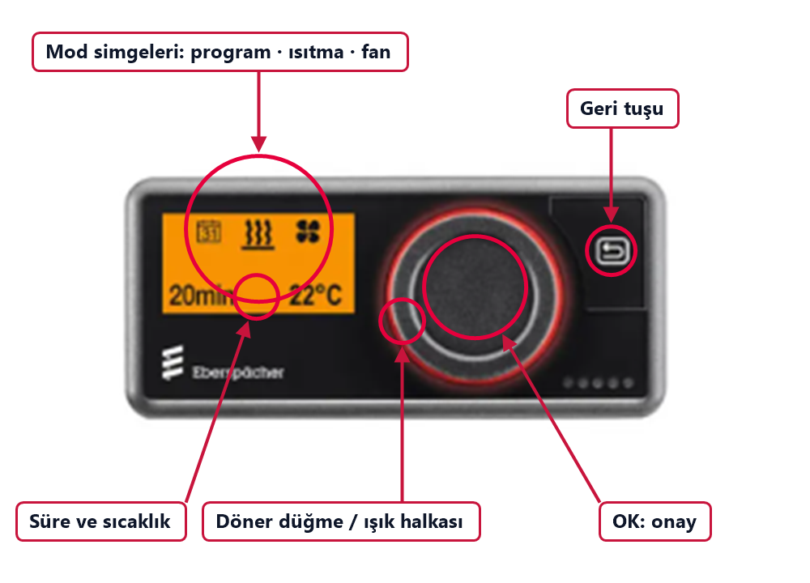
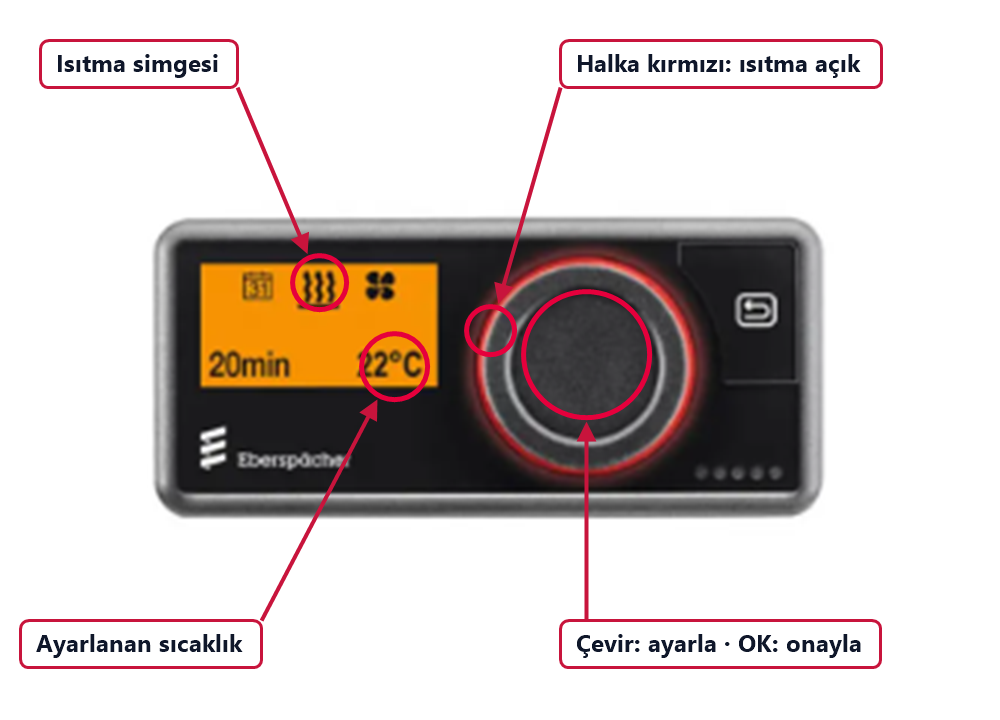
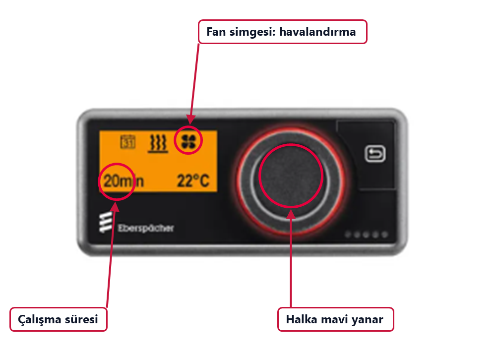
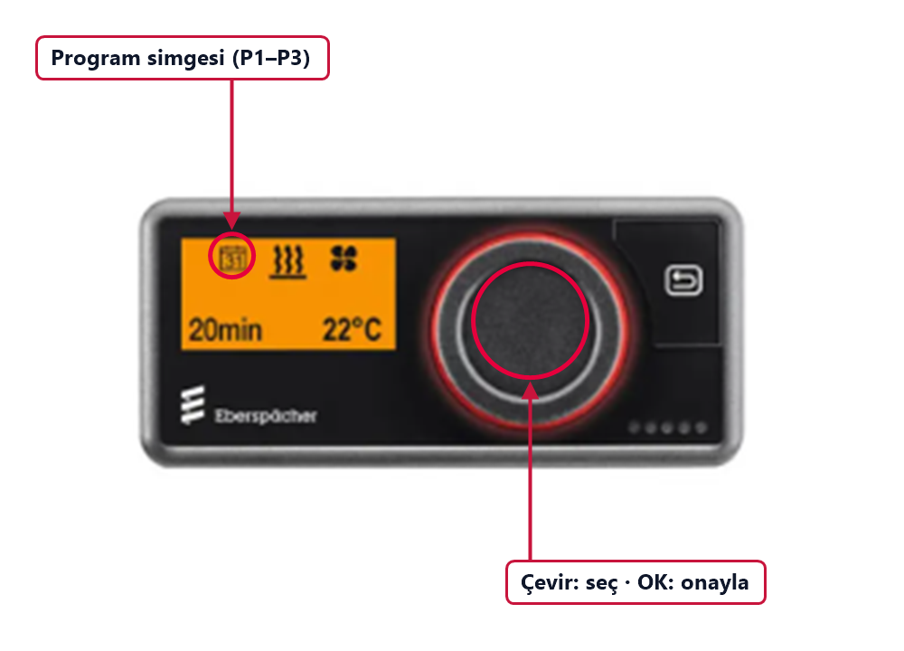
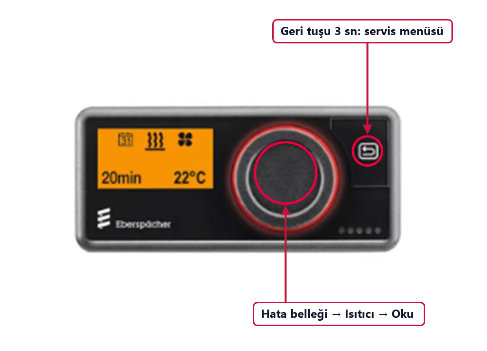

![Demonte Caravan]()





| ☐ | Sıcak hava çıkışı ve hava emişi açık, önünde eşya yok |
| ☐ | Egzoz çıkışı açık (kar, çamur, duvar ile kapalı değil); araç kapalı alanda değil |
| ☐ | Araç deposunda yeterli yakıt var (depo çeyreğin altına inmeden ısıtıcıyı çalıştırın) |
| ☐ | Akü dolu; ısıtıcı kapatıldıktan sonra soğuma fanı bitmeden akü ayrılmıyor |
| ☐ | Ayarlanan sıcaklık ortam sıcaklığından yüksek |